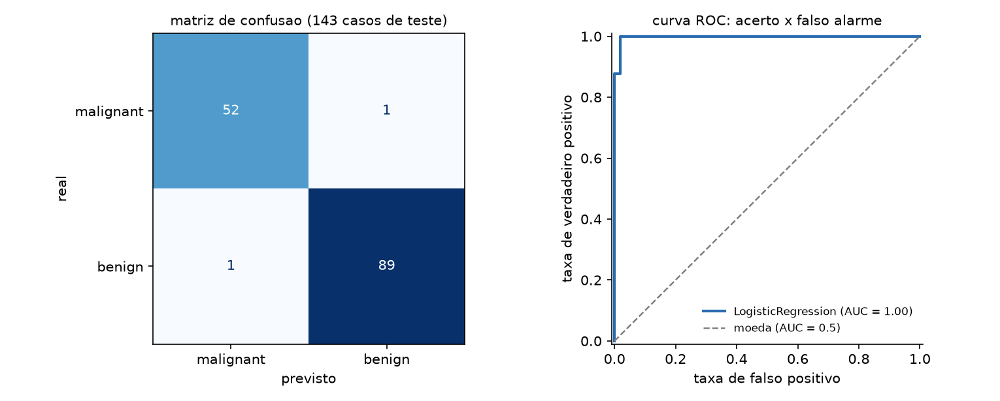
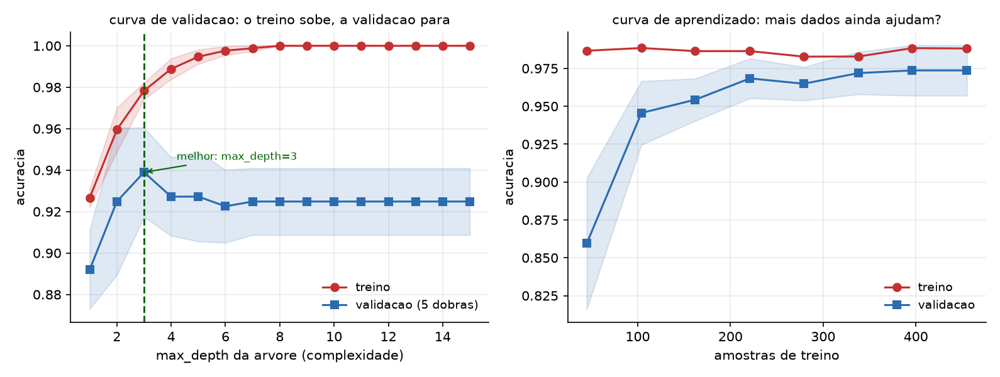
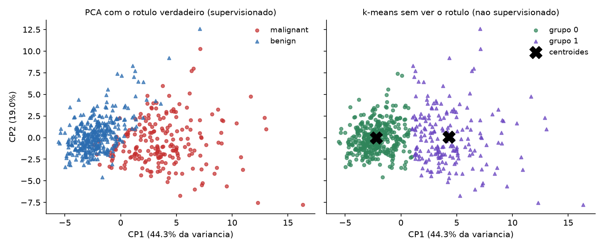

85 Introdução ao aprendizado de máquina com scikit-learn
Um modelo acertou 100% dos casos de treino. Em produção, acerta 60%. Outro, treinado com dados que não tinham sinal nenhum — ruído puro, rótulos sorteados —, apresentou 87% de acurácia em validação cruzada. Nos dois casos o código roda, não levanta exceção e produz números convincentes.
O problema central do aprendizado de máquina não é ajustar, é generalizar. Ajustar é fácil: com parâmetros suficientes, qualquer modelo decora qualquer conjunto de dados. Generalizar é acertar em dados que o modelo nunca viu — e quase toda a disciplina, incluindo a estrutura da biblioteca, existe para proteger essa medida.
Este capítulo usa scikit-learn 1.9.0. Ele é uma introdução: cobre o fluxo de trabalho, a API e os erros que invalidam resultados. Não cobre a matemática dos algoritmos, e não substitui um curso de estatística.
pip install scikit-learn85.1 O vocabulário
Xé a matriz de atributos (features): uma linha por amostra, uma coluna por variável. Forma(n_amostras, n_atributos).yé o alvo (target): o que se quer prever. Vetor de tamanhon_amostras.- Supervisionado é quando existe
y. Seyé categoria, é classificação; se é número contínuo, é regressão. - Não supervisionado é quando não existe
y— agrupamento (KMeans) e redução de dimensionalidade (PCA).
from sklearn.datasets import load_breast_cancer
dados = load_breast_cancer(as_frame=True)
X, y = dados.data, dados.target
print("X:", X.shape, "| y:", y.shape)
print("classes:", dict(zip(dados.target_names, np.bincount(y))))X: (569, 30) | y: (569,)
classes: {'malignant': 212, 'benign': 357}
proporcao da classe majoritaria: 0.627485.2 A API única
O que faz do scikit-learn a biblioteca que é não são os algoritmos — é o fato de todos obedecerem à mesma interface:
fit(X, y)aprende. É o único método que olha os dados de treino.predict(X)prevê.predict_proba(X)dá as probabilidades, quando o modelo as tem.transform(X)transforma (escaladores, codificadores,PCA).score(X, y)devolve a métrica padrão do estimador.
Trocar LogisticRegression() por RandomForestClassifier() é trocar uma linha. Essa uniformidade é o que permite comparar dez modelos num laço e é o motivo de Pipeline e GridSearchCV funcionarem com qualquer coisa.
85.3 O fluxo, e onde ele vaza
from sklearn.model_selection import train_test_split
X_tr, X_te, y_tr, y_te = train_test_split(
X, y, test_size=0.25, random_state=42, stratify=y)treino: 426 | teste: 143
proporcao da classe 1 no treino: 0.6268
proporcao da classe 1 no teste : 0.6294Três argumentos, três razões. test_size reserva a parte que mede; random_state torna o resultado reprodutível; stratify=y mantém a proporção das classes nas duas partes — sem ele, uma classe rara pode ficar quase toda de um lado, e a métrica passa a medir o sorteio.
85.3.1 O piso
Antes de qualquer modelo, saiba o que é “melhor que nada”:
from sklearn.dummy import DummyClassifier
bobo = DummyClassifier(strategy="most_frequent").fit(X_tr, y_tr)
print("acuracia do DummyClassifier:", round(bobo.score(X_te, y_te), 4))acuracia do DummyClassifier: 0.6294Um modelo que sempre responde a classe majoritária acerta 63%. Qualquer resultado abaixo disso é pior que não fazer nada, e 70% de acurácia neste problema seria péssimo, não razoável. Sem essa referência, não há como julgar número nenhum.
85.4 O primeiro modelo, e o Pipeline
from sklearn.pipeline import Pipeline
from sklearn.preprocessing import StandardScaler
from sklearn.linear_model import LogisticRegression
modelo = Pipeline([
("escala", StandardScaler()),
("clf", LogisticRegression(max_iter=2000, random_state=42)),
])
modelo.fit(X_tr, y_tr)
print("acuracia treino:", round(modelo.score(X_tr, y_tr), 4))
print("acuracia teste :", round(modelo.score(X_te, y_te), 4))acuracia treino: 0.9883
acuracia teste : 0.986O Pipeline não é conveniência: é correção. Ele garante que, quando você chama fit, o StandardScaler aprende média e desvio só do treino; e que, quando chama predict, ele transforma com aqueles mesmos números em vez de recalculá-los. Fazer isso à mão é possível e é onde o erro entra.
De passagem, o escalador não é decorativo:
sem StandardScaler, acuracia teste: 0.958
escala das colunas (min/max de mean):
mean radius mean area
min 6.98 143.5
max 28.11 2499.0Uma coluna vai até 28, outra até 2499. Modelos baseados em distância (KNeighbors, SVM) e em gradiente (regressão logística, redes) são sensíveis à escala: sem padronizar, a coluna de maior magnitude domina, e aqui a regressão logística sem escala nem convergiu em 2000 iterações. Árvores e florestas, por compararem limiares dentro de cada coluna, são indiferentes a isso.
85.5 Vazamento: o erro que fabrica resultados
Aqui está o experimento mais importante do capítulo. Ruído puro: 120 amostras, 4000 colunas de números aleatórios, rótulos sorteados. Não existe sinal. A acurácia honesta é 50%.
# ERRADO: seleciona os atributos usando o conjunto TODO
sel = SelectKBest(f_classif, k=20).fit(X, y)
nota = cross_val_score(LogisticRegression(max_iter=1000), sel.transform(X), y, cv=cv)ERRADO (selecao antes do split):
dobras : [0.9583 0.8333 0.8333 0.875 0.8333]
media : 0.8667 <- do nada# CERTO: a selecao vive dentro do Pipeline, refeita em cada dobra
cano = Pipeline([("sel", SelectKBest(f_classif, k=20)),
("clf", LogisticRegression(max_iter=1000))])
nota = cross_val_score(cano, X, y, cv=cv)CERTO (selecao dentro do Pipeline):
dobras : [0.5833 0.5 0.5 0.625 0.5 ]
media : 0.5417 <- a verdade: moedaOitenta e sete por cento de acurácia sobre dados sem nenhuma informação. O mecanismo: com 4000 colunas de ruído e 120 amostras, algumas colunas por puro acaso se correlacionam com o rótulo. Selecioná-las olhando o conjunto inteiro transfere informação do teste para o treino, e a validação cruzada passa a medir essa contaminação em vez de medir generalização.
Este é o defeito mais grave desta área porque ele não falha — ele produz um resultado bom. Artigos são publicados assim, e modelos vão para produção assim. A defesa é estrutural: todo passo que aprende algo dos dados vive dentro do Pipeline, e é o Pipeline que o cross_val_score refaz em cada dobra.
85.6 Validação cruzada
from sklearn.model_selection import cross_val_score, StratifiedKFold
cv = StratifiedKFold(n_splits=5, shuffle=True, random_state=42)
notas = cross_val_score(modelo, X_tr, y_tr, cv=cv, scoring="accuracy")acuracia em cada dobra: [0.9767 0.9647 0.9765 0.9882 0.9882]
media 0.9789 desvio 0.0088
relato honesto: 0.979 +/- 0.009Um único train_test_split dá um único número, e esse número depende do sorteio. A validação cruzada treina k vezes, cada uma deixando uma parte de fora, e devolve k medidas — cuja dispersão é a informação que faltava. Uma diferença de 0,5 ponto entre dois modelos cujas dobras variam 2 pontos não é diferença nenhuma.
Use StratifiedKFold para classificação (preserva as proporções), KFold para regressão e TimeSeriesSplit para dados temporais — neste último caso, sortear as dobras deixaria o modelo treinar no futuro e prever o passado, que é outra forma de vazamento.
cross_validate calcula várias métricas de uma vez:
test_accuracy 0.9789
test_precision 0.9745
test_recall 0.9925
test_roc_auc 0.996285.7 Métricas: acurácia engana

cm = confusion_matrix(y_te, modelo.predict(X_te))matriz de confusao (linhas=real, colunas=previsto):
[[52 1]
[ 1 89]]
VN=52 FP=1 FN=1 VP=89
acuracia : 0.9860
precisao : 0.9889 = VP/(VP+FP)
recall : 0.9889 = VP/(VP+FN)
roc_auc : 0.9977A matriz de confusão é o dado; as métricas são resumos dela. E os dois resumos que importam respondem perguntas diferentes:
- Precisão — dos que eu marquei como positivos, quantos eram? Alta precisão significa poucos falsos alarmes.
- Recall (sensibilidade) — dos positivos que existem, quantos eu achei? Alto recall significa poucos casos perdidos.
Qual priorizar é uma decisão do problema, não da estatística. Num rastreamento de doença, perder um caso (falso negativo) é muito pior que um exame extra — recall. Num filtro de spam, mandar um e-mail legítimo para o lixo é pior que deixar passar um spam — precisão. O f1 é a média harmônica dos dois, útil quando não há motivo para preferir um.
E então o caso que expõe a acurácia:
proporcao da classe rara: 0.024
modelo que sempre diz 'nao':
acuracia : 0.9767 <- parece otimo
recall : 0.0000 <- nao acha nenhum caso
LogisticRegression com class_weight='balanced':
acuracia : 0.8533 <- MENOR
recall : 0.7143 <- e util
precisao : 0.1064Um modelo com 97,7% de acurácia que não detecta nada. Com 2,4% de casos positivos, responder “não” sempre acerta quase tudo — e é inútil. O modelo real tem acurácia menor e é o único dos dois que serve.
Em classe desbalanceada, use recall, precision, f1, roc_auc ou average_precision; e class_weight="balanced" para que o modelo pague mais caro por errar a classe rara. Acurácia em problema desbalanceado é a métrica errada, e é a que vem por padrão.
85.8 Sobreajuste e a curva de validação
modelo treino teste
arvore max_depth=2 0.9577 0.9091
arvore sem limite 1.0000 0.9231A árvore sem limite acerta tudo no treino. Ela decorou. E, no teste, ganhou 1,4 ponto da árvore de profundidade 2 — bem menos do que a diferença de treino sugeria.

A curva de validação é o diagnóstico: aumente a complexidade e observe as duas linhas. Enquanto as duas sobem, o modelo está subajustado (falta capacidade). Quando a de treino continua subindo e a de validação empaca ou cai, começou o sobreajuste — e o melhor ponto é onde a validação atinge o máximo, aqui max_depth=3.
A curva de aprendizado responde outra pergunta: as duas linhas ainda estão se aproximando quando você chega ao fim dos dados? Se sim, mais dados ajudariam. Se já se encontraram e estacionaram, o gargalo é o modelo ou os atributos, e coletar mais amostras não muda nada. Essa distinção decide onde investir.
85.9 Ajustar hiperparâmetros
from sklearn.model_selection import GridSearchCV
grade = {"clf__C": [0.01, 0.1, 1.0, 10.0, 100.0]}
busca = GridSearchCV(modelo, grade, cv=cv, scoring="roc_auc", n_jobs=-1)
busca.fit(X_tr, y_tr)melhor C : {'clf__C': 1.0}
melhor roc_auc CV: 0.9962
roc_auc no teste : 0.9977
todos os candidatos:
C=0.01 roc_auc=0.9926 +/- 0.0046
C=0.1 roc_auc=0.9953 +/- 0.0034
C=1.0 roc_auc=0.9962 +/- 0.0040
C=10.0 roc_auc=0.9877 +/- 0.0104Note a sintaxe clf__C: dois sublinhados separam o nome do passo do nome do parâmetro, e é assim que se alcança qualquer parâmetro de qualquer etapa do Pipeline — inclusive escala__with_mean.
Olhe a coluna de desvio antes de celebrar o vencedor: 0,9962 ± 0,0040 contra 0,9953 ± 0,0034 são a mesma coisa. O GridSearchCV sempre devolve um melhor; cabe a você ver se ele é melhor de verdade.
Para grades grandes, RandomizedSearchCV amostra combinações em vez de testar todas, e costuma achar algo tão bom em uma fração do tempo. E n_jobs=-1 usa todos os núcleos — a busca é o caso perfeito de paralelismo, porque os candidatos são independentes (Volume 15).
Se você escolher hiperparâmetros olhando a métrica de teste, ela deixa de ser uma estimativa honesta — você acabou de ajustar o modelo ao teste, só que devagar e à mão. A escolha se faz por validação cruzada dentro do treino; o teste é aberto uma vez, no fim, para relatar. Se precisar iterar muito, separe três conjuntos: treino, validação e teste.
85.10 Comparar modelos
modelo roc_auc CV desvio
LogisticRegression 0.9962 0.0040
KNeighbors(k=5) 0.9820 0.0106
DecisionTree 0.9224 0.0192
RandomForest(200) 0.9887 0.0102A regressão logística, o modelo mais simples da lista, ganhou. Isso é comum e vale como aviso contra começar pelo modelo mais sofisticado: estabeleça a linha de base com um modelo linear e só aceite complexidade que pague por si.
Como orientação inicial: LogisticRegression/Ridge como referência; RandomForest ou HistGradientBoostingClassifier para dados tabulares heterogêneos (e sem precisar escalar); KNeighbors para fronteiras locais e conjuntos pequenos. Para tabelas, gradient boosting costuma ser o teto prático — redes neurais brilham em imagem, texto e áudio, não aqui.
E florestas dão de graça uma medida de importância:
6 atributos mais importantes (RandomForest):
worst perimeter 0.1457
worst area 0.1441
worst concave points 0.1146
mean concave points 0.0983
worst radius 0.0724Útil para entender e reduzir atributos — mas cuidado: essa importância é enviesada a favor de variáveis com muitos valores distintos, e divide o crédito entre colunas correlacionadas. Para decisões sérias, permutation_importance.
85.11 Regressão
modelo MAE RMSE R2
LinearRegression 41.55 53.37 0.4849
Ridge(alpha=1) 45.91 55.73 0.4384
RandomForest 43.34 54.48 0.4633
escala do alvo: 25 a 346 (media 152.1)As três métricas dizem coisas diferentes. MAE é o erro médio absoluto, na unidade do alvo e fácil de comunicar (“erra 41 em média”). RMSE pune erro grande mais que erro pequeno, por causa do quadrado — use quando um erro grande é desproporcionalmente ruim. R² é a fração da variância explicada, adimensional: 0,48 aqui, o que significa que metade da variação continua inexplicada.
Sempre compare o erro com a escala do alvo. Um MAE de 41 num alvo que vai de 25 a 346 é um erro considerável; o mesmo 41 num alvo na casa dos milhões seria excelente. Métrica sem referência não informa nada — e é por isso que DummyRegressor(strategy="mean") também merece ser rodado.
85.12 Dados de verdade: ColumnTransformer
Uma tabela real tem números e texto, com buracos. ColumnTransformer aplica preprocessamentos diferentes a colunas diferentes, dentro do mesmo Pipeline:
prep = ColumnTransformer([
("num", Pipeline([("imp", SimpleImputer(strategy="median")),
("esc", StandardScaler())]), ["idade", "renda"]),
("cat", OneHotEncoder(handle_unknown="ignore"), ["cidade"]),
])
cano = Pipeline([("prep", prep), ("clf", LogisticRegression())])
cano.fit(misto, alvo)colunas depois do preprocessamento: (6, 5)
nomes gerados: ['num__idade', 'num__renda', 'cat__cidade_belem',
'cat__cidade_curitiba', 'cat__cidade_manaus']Dois detalhes que evitam falha em produção. A imputação também vive no Pipeline: a mediana tem de vir do treino, senão é vazamento como qualquer outro. E handle_unknown="ignore" no OneHotEncoder impede que uma cidade nova, ausente no treino, levante exceção no momento da previsão — que é exatamente quando ninguém está olhando.
85.13 Não supervisionado

variancia explicada por componente: [0.4427 0.1897]
acumulada nas 2 primeiras : 0.6324
k-means nao viu o rotulo, e ainda assim:
classe real 0 1
grupo k-means
0 36 339
1 176 18PCA projeta 30 colunas em 2, preservando 63% da variância — o suficiente para desenhar. KMeans, que nunca viu os rótulos, encontrou dois grupos que coincidem com as classes em 91% dos casos.
Duas cautelas. PCA e KMeans exigem dados padronizados, porque ambos trabalham com variância e distância; sem StandardScaler, a coluna de maior magnitude define tudo. E o k do KMeans é uma escolha sua: aqui sabíamos que eram duas classes, o que num problema real de agrupamento não se sabe — daí o método do cotovelo e o silhouette_score, que são heurísticas, não respostas.
85.14 Salvar o modelo
import joblib
joblib.dump(modelo, "modelo.joblib")
recarregado = joblib.load("modelo.joblib")modelo salvo : 3073 bytes
mesma previsao apos recarregar: TrueSalve o Pipeline inteiro, não só o classificador — ele contém o escalador treinado, sem o qual as previsões saem erradas em silêncio.
E o aviso do Capítulo 64 vale integralmente: joblib usa pickle, então carregar um modelo de fonte não confiável executa código arbitrário. Modelo baixado da internet é código baixado da internet. Guarde junto do arquivo a versão do scikit-learn usada: carregar um modelo salvo por outra versão pode falhar ou, pior, funcionar com comportamento alterado.
85.15 Onde isto termina
- Aprendizado profundo (imagem, texto, áudio, geração) é PyTorch, JAX ou TensorFlow. Redes em dados tabulares raramente batem gradient boosting.
- Séries temporais exigem validação que respeite a ordem (
TimeSeriesSplit) e ferramentas próprias. - Causalidade não é previsão. Um modelo com R² de 0,9 não diz que mexer numa variável muda o resultado.
- Justiça e viés — um modelo aprende os padrões dos dados, inclusive os discriminatórios. Se o histórico tem viés, o modelo o reproduz com aparência de objetividade. Avaliar métricas por subgrupo é obrigatório antes de qualquer decisão sobre pessoas.
85.16 🐍 Jeito Pythônico
Pipeline sempre, desde a primeira linha. Não é organização, é a defesa estrutural contra vazamento: só o Pipeline garante que cada fit veja apenas o treino, inclusive dentro de cada dobra da validação cruzada.
DummyClassifier/DummyRegressor antes do primeiro modelo real. Sem o piso, você não sabe se 70% é bom ou desastroso.
stratify=y em classificação, random_state em tudo. O primeiro protege a proporção das classes; o segundo torna o resultado reprodutível, que é pré-requisito para comparar qualquer coisa.
Relate média e desvio da validação cruzada. Um número só esconde que a diferença entre dois modelos é menor que a variação entre dobras.
Escolha a métrica pelo custo do erro, não pelo padrão. Acurácia em classe desbalanceada dá 97,7% a um modelo que não detecta nada. Decida antes se o problema é perder casos ou dar falso alarme.
Comece pelo modelo linear. Ele é rápido, interpretável, e neste capítulo ganhou da floresta. Complexidade se justifica com medida, não com expectativa.
O conjunto de teste é aberto uma vez. Ajustar hiperparâmetro olhando o teste é sobreajustá-lo à mão.
Salve o Pipeline inteiro, com a versão da biblioteca — e trate modelo de terceiros como código de terceiros, porque joblib é pickle.
Escale para modelos de distância e gradiente; não se preocupe para árvores. Saber por quê vale mais que decorar a lista.
85.17 🧪 Laboratório
Passo 1 — ambiente.
mkdir lab-ml && cd lab-ml
python3.13 -m venv .venv
source .venv/bin/activate # Windows: .venv\Scripts\activate
python -m pip install scikit-learn pandas matplotlib
python -c "import sklearn; print(sklearn.__version__)"Passo 2 — conhecer os dados. Carregue load_breast_cancer(as_frame=True). Imprima X.shape, a contagem por classe, X.describe() e a proporção da classe majoritária. Antes de modelar, responda: qual é a acurácia de um modelo que sempre responde a classe mais comum?
Passo 3 — o piso. Confirme com DummyClassifier:
acuracia do DummyClassifier: 0.6294Rode também strategy="stratified" e strategy="uniform" e compare.
Passo 4 — o primeiro Pipeline. Monte StandardScaler + LogisticRegression, treine e avalie:
acuracia treino: 0.9883
acuracia teste : 0.986Depois treine a LogisticRegression sem o escalador e observe a queda e o aviso de convergência.
Passo 5 — o vazamento, com ruído puro. Este é o passo mais importante do laboratório. Gere X = rng.normal(size=(120, 4000)) e y = rng.integers(0, 2, 120) — sem sinal algum. Então:
- selecione os 20 melhores atributos com
SelectKBestsobreXinteiro e rodecross_val_score; - ponha o
SelectKBestdentro de umPipelinee rode de novo.
ERRADO (selecao antes do split): media 0.8667
CERTO (dentro do Pipeline) : media 0.5417Guarde esses dois números. Eles são a razão de existir do Pipeline.
Passo 6 — validação cruzada. Rode cross_val_score com StratifiedKFold(5, shuffle=True) e imprima as cinco dobras, a média e o desvio. Repita com random_state diferente e veja quanto a média se move. Depois use cross_validate com quatro métricas de uma vez.
Passo 7 — a acurácia enganosa. Com make_classification(n_samples=2000, weights=[0.98, 0.02]), compare um DummyClassifier com uma LogisticRegression(class_weight="balanced"):
sempre 'nao' : acuracia 0.9767 recall 0.0000
balanced : acuracia 0.8533 recall 0.7143Imprima a matriz de confusão dos dois e explique, em uma frase, por que o de acurácia maior é o pior.
Passo 8 — precisão contra recall. Sobre o modelo do passo 4, use predict_proba e classifique com limiares de 0,1 a 0,9. Monte uma tabela de precisão e recall por limiar e desenhe as duas curvas. Escolha o limiar que você usaria se fosse um rastreamento médico, e o que usaria se fosse um filtro de spam — e justifique cada um.
Passo 9 — sobreajuste. Compare uma DecisionTreeClassifier(max_depth=2) com uma sem limite:
arvore max_depth=2 0.9577 0.9091
arvore sem limite 1.0000 0.9231Depois use validation_curve variando max_depth de 1 a 15 e desenhe as duas linhas. Marque onde a validação atinge o máximo. Faça o mesmo com learning_curve e responda: mais dados ajudariam?
Passo 10 — busca de hiperparâmetros. Rode GridSearchCV sobre clf__C com cinco valores e scoring="roc_auc". Imprima best_params_, best_score_ e a tabela completa de cv_results_ com médias e desvios. Verifique se o vencedor é estatisticamente distinguível do segundo.
Passo 11 — comparar quatro modelos. Com o mesmo cv e a mesma métrica, avalie LogisticRegression, KNeighbors, DecisionTree e RandomForest, e imprima média e desvio de cada um. Só então abra o conjunto de teste, uma vez, com o vencedor.
Passo 12 — dados mistos. Construa um DataFrame com duas colunas numéricas (com NaN) e uma categórica, e monte um ColumnTransformer com SimpleImputer + StandardScaler para as numéricas e OneHotEncoder(handle_unknown="ignore") para a categórica. Confirme os nomes gerados com get_feature_names_out(). Depois preveja para uma cidade que não existia no treino e confirme que não explode.
Passo 13 — sem rótulo. Padronize X, reduza a 2 componentes com PCA e desenhe o scatter duas vezes: colorido pelo rótulo verdadeiro e pelos grupos do KMeans(n_clusters=2). Cruze os dois com pd.crosstab:
classe real 0 1
grupo k-means
0 36 339
1 176 18Depois rode o KMeans sem padronizar e compare — a diferença é o argumento a favor do StandardScaler.
Passo 14 — persistir. Salve o Pipeline com joblib.dump, recarregue e confirme que as previsões são idênticas. Depois salve só o classificador (sem o escalador), recarregue, preveja sobre X_te cru e observe o resultado errado — sem nenhum erro levantado.
85.18 Resumo
- O problema do aprendizado de máquina é generalizar, não ajustar. Toda a estrutura da biblioteca existe para proteger a estimativa de generalização.
- A API é uniforme:
fit,predict,transform,score. Trocar de modelo é trocar uma linha, e é isso que fazPipelineeGridSearchCVfuncionarem com qualquer estimador. train_test_splitcomstratify=yerandom_state; e umDummyClassifierantes de tudo, para saber o que “melhor que nada” significa neste problema.Pipelineé correção, não conveniência. Num experimento com ruído puro, selecionar atributos antes do split produziu 86,7% de acurácia sobre dados sem sinal; dentro doPipeline, os mesmos dados deram 54%.- Validação cruzada devolve k medidas: relate média e desvio. Diferença menor que a variação entre dobras não é diferença. Dados temporais pedem
TimeSeriesSplit. - Acurácia é a métrica errada em classe desbalanceada: 97,7% para um modelo com recall zero. Escolha entre precisão e recall pelo custo do erro, e use
class_weight="balanced". - Sobreajuste se diagnostica com a curva de validação (treino sobe, validação empaca); a curva de aprendizado diz se mais dados ajudariam.
- Em
GridSearchCV, parâmetro de etapa épasso__parametro(dois sublinhados). O teste é aberto uma vez, no fim — escolher hiperparâmetro por ele é sobreajustá-lo à mão. - Comece pelo modelo linear: aqui a regressão logística venceu a floresta. Escale para modelos de distância e gradiente; árvores não precisam.
ColumnTransformerpara tabelas mistas, com imputação dentro doPipelineehandle_unknown="ignore"no codificador. Salve oPipelineinteiro comjoblib— e lembre quejoblibépickle, com todos os riscos do Capítulo 64.